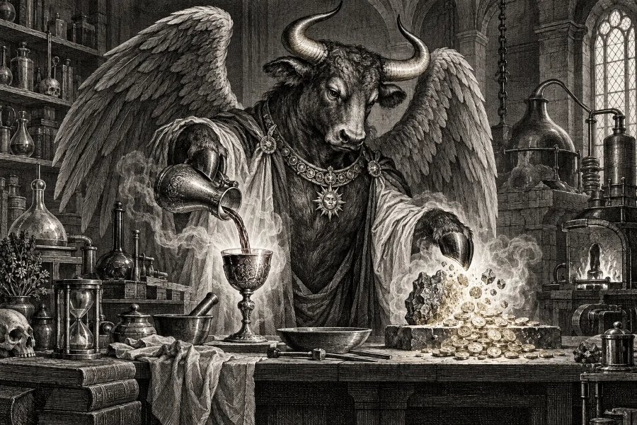

ソロモン72柱・悪魔
ザガン
「金属を貨幣に変える錬金の王」
⛩️ あなたの正体も診断する（無料）本質
グリフォンの翼をもつ牛の姿で現れる、ソロモン72柱の王。水をぶどう酒に、金属をその国の貨幣に変え、愚かな者を賢くするといわれます。あなたも、ありふれたものを価値あるものに変える才能の持ち主です。
- ✨ 長所
- 物の価値を見抜き、工夫して高めるセンスがあります。お金の感覚も鋭いほうです。
- ⚠️ 短所
- 損得で考えすぎて、気持ちの面を後回しにしがち。
- 💞 恋愛・人間関係
- 相手の良さを引き出し、磨いてあげられる人。ふたりの将来設計もしっかりしています。
- 💼 仕事・才能
- 金融、商品開発、料理やお酒、リメイクなど、価値を生み出す仕事に向いています。